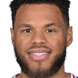

His best final NBA finish was #14 of 30, with the 2015-16 Dallas Mavericks. In his 204 games for 1 team over 4 seasons they went 79–125 (38.7%), −46 games under .500, with an average final finish of 21.2.
Jump to: Record by opponent · Season by season · Teammate help
Compare Salah Mejri with…
Final NBA finish, season by season
Title Finals Other playoffs Missed playoffs. #1 = champion; the dashed line is last place that season. Each point opens that season's final standings.
All 30 teams ranked in 2015-16, his best finish (#14)Teammate help
 Dirk Nowitzki1.01 season
Dirk Nowitzki1.01 season Luka Doncic0.81 season
Luka Doncic0.81 season Yogi Ferrell0.11 season
Yogi Ferrell0.11 season
Career
Career records (W–L, W − L, with and without) include 2026-27 games through Nov. 25, 2026; season counts and finishes are through 2025-26. Each card opens its board in the same scope. How we count.

Latest completed seasons
Season by season
Newest first; every header sorts. Final NBA finish is the team's rank among all teams that season (#1 = champion) and opens that season's standings. "Without him" uses the team-season window; the span line counts only the games between his first and last game for the team.
| 2018-19 | #22 of 30 | 33–49 40.2% | Missed playoffs | 36 of 82 | 13–23 36.1% | 20–26 43.5%span: 18–19, gap −12.5 | −7.4 | |
| 2017-18 | #27 of 30 | 24–58 29.3% | Missed playoffs | 61 of 82 | 21–40 34.4% | 3–18 14.3%span: 3–14, gap +16.8 | +20.1 | |
| 2016-17 | #22 of 30 | 33–49 40.2% | Missed playoffs | 73 of 82 | 29–44 39.7% | 4–5 44.4%span: 4–4, gap −10.3 | −4.7 | |
| 2015-16 | #14 of 30 | 42–40 51.2% | Lost 1st round 1–4 | 34 of 82 | 16–18 47.1% | 26–22 54.2%span: 26–22, gap −7.1 | −7.1 |
On/off, starts and close games
From the lineup data, 1996-97 on. On/off is net points per 100 possessions with him on the floor minus off, a different unit from the win-rate gaps. Started and off the bench are team records in those games; close games are those within 5 points in the last 5 minutes with him on the floor.
Teammate help by season
Help this season = Teammates Score points for honors won that season by teammates who shared a game with him, with every teammate that adds to it. Only honors won in that same season count. How help works.
- 2018-19
 Dallas
Dirk Nowitzki All-Star126 gLuka Doncic ROYAll-Rookie 1st0.7527 g
Dallas
Dirk Nowitzki All-Star126 gLuka Doncic ROYAll-Rookie 1st0.7527 g
Help this season: 1.75 = 1 Dirk Nowitzki + 0.75 Luka Doncic
Other teammates (no honors that season): Dorian Finney-Smith 35 g, Dwight Powell 33 g, Jalen Brunson 33 g, Devin Harris 32 g, Maxi Kleber 28 g, Ryan Broekhoff 24 g, Justin Jackson 20 g, Trey Burke 17 g, Courtney Lee 17 g, Harrison Barnes 16 g, DeAndre Jordan 15 g, Wesley Matthews 14 g, Jose Juan Barea 13 g, Tim Hardaway Jr 12 g and 3 more
- 2017-18Dallas
 Dennis Smith All-Rookie 2nd0.12552 g
Dennis Smith All-Rookie 2nd0.12552 g
Help this season: 0.125 = 0.125 Dennis Smith
Other teammates (no honors that season): Yogi Ferrell 61 g, Dirk Nowitzki 60 g, Dwight Powell 58 g, Harrison Barnes 58 g, Wesley Matthews 56 g, Jose Juan Barea 56 g, Maxi Kleber 56 g, Devin Harris 41 g, Kyle Collinsworth 22 g, Nerlens Noel 15 g, Antonius Cleveland 12 g, Doug McDermott 11 g, Jalen Jones 7 g, Dorian Finney-Smith 7 g and 6 more
- 2016-17Dallas
Yogi Ferrell All-Rookie 2nd0.12533 g
Help this season: 0.125 = 0.125 Yogi Ferrell
Other teammates (no honors that season): Dorian Finney-Smith 72 g, Harrison Barnes 70 g, Dwight Powell 68 g, Wesley Matthews 66 g, Seth Curry 62 g, Devin Harris 60 g, Nicolas Brussino 50 g, Dirk Nowitzki 49 g, Justin Anderson 46 g, Deron Williams 35 g, Jose Juan Barea 29 g, AJ Hammons 21 g, Andrew Bogut 20 g, Nerlens Noel 19 g and 8 more
- 2015-16DallasHelp this season: 0, no honored teammate
Record against each opponent
Regular season, through 2025-26 (2026-27 games not included): 204 games, 79–125, against 29 franchises.
Grouped by franchise (named as today); game lists keep each team's name that season. Filters and the tab are kept in the URL, so a filtered view can be shared.
| Games list | |||||||
|---|---|---|---|---|---|---|---|
| 14 | 5–9 | 35.7% | −4 | N/A | 2015-16 to 2018-19 | ||
| 12 | 7–5 | 58.3% | +2 | N/A | 2015-16 to 2018-19 | ||
| 12 | 2–10 | 16.7% | −8 | N/A | 2015-16 to 2018-19 | ||
| 11 | 3–8 | 27.3% | −5 | N/A | 2015-16 to 2018-19 | ||
| 11 | 4–7 | 36.4% | −3 | 0–1 (1–3 in games) | 2015-16 to 2018-19 | ||
| 11 | 3–8 | 27.3% | −5 | N/A | 2015-16 to 2018-19 | ||
| 10 | 4–6 | 40.0% | −2 | N/A | 2015-16 to 2018-19 | ||
| 9 | 3–6 | 33.3% | −3 | N/A | 2015-16 to 2018-19 | ||
| 8 | 0–8 | 0.0% | −8 | N/A | 2015-16 to 2017-18 | ||
| 8 | 2–6 | 25.0% | −4 | N/A | 2015-16 to 2018-19 | ||
| 8 | 5–3 | 62.5% | +2 | N/A | 2015-16 to 2018-19 | ||
| 8 | 3–5 | 37.5% | −2 | N/A | 2015-16 to 2018-19 | ||
| 8 | 4–4 | 50.0% | 0 | N/A | 2015-16 to 2018-19 | ||
| 8 | 3–5 | 37.5% | −2 | N/A | 2015-16 to 2018-19 | ||
| 7 | 3–4 | 42.9% | −1 | N/A | 2015-16 to 2017-18 | ||
| 6 | 1–5 | 16.7% | −4 | N/A | 2016-17 to 2018-19 | ||
| 6 | 5–1 | 83.3% | +4 | N/A | 2016-17 to 2018-19 | ||
| 5 | 3–2 | 60.0% | +1 | N/A | 2015-16 to 2018-19 | ||
| 5 | 2–3 | 40.0% | −1 | N/A | 2015-16 to 2018-19 | ||
| 5 | 3–2 | 60.0% | +1 | N/A | 2015-16 to 2018-19 | ||
| 4 | 1–3 | 25.0% | −2 | N/A | 2016-17 to 2018-19 | ||
| 4 | 2–2 | 50.0% | 0 | N/A | 2016-17 to 2018-19 | ||
| 4 | 3–1 | 75.0% | +2 | N/A | 2016-17 to 2018-19 | ||
| 4 | 3–1 | 75.0% | +2 | N/A | 2016-17 to 2017-18 | ||
| 4 | 1–3 | 25.0% | −2 | N/A | 2015-16 to 2017-18 | ||
| 3 | 0–3 | 0.0% | −3 | N/A | 2016-17 to 2017-18 | ||
| 3 | 2–1 | 66.7% | +1 | N/A | 2016-17 to 2017-18 | ||
| 3 | 1–2 | 33.3% | −1 | N/A | 2016-17 to 2017-18 | ||
| 3 | 1–2 | 33.3% | −1 | N/A | 2016-17 to 2018-19 |
Rows add up to his career record in his games. A playoff series counts when he played in it; early round-robin games show as games only. How we count.
Playoffs, with and without him
| 2015-16 | Lost in the first round 1–4 to | #14 of 30 | 4 of 5 | 1–3 25.0% | 0–1 0.0% | +25.0 |
Arrival and departure
Team wins per 82 games the season before he arrived vs his first season there, and his last season vs the season after he left. He leaves a team only when his next season with games is for another team (or he never plays again); whole seasons he missed and came back from are one "Missed" row with the team's record without him. Per 82 so short seasons compare fairly. These are team records, not a measure of what he did.
Best duos
Team record in regular-season games both played, top 10 by win %, at least 50 games together.
 Seth Curry
26–36 41.9%
Seth Curry
26–36 41.9%- Dennis Smith
26–36 41.9%
 Wesley Matthews
70–98 41.7%
Wesley Matthews
70–98 41.7% Jose Juan Barea
54–76 41.5%
Jose Juan Barea
54–76 41.5% Devin Harris
65–93 41.1%
Devin Harris
65–93 41.1% Deron Williams
25–36 41.0%
Deron Williams
25–36 41.0% Harrison Barnes
59–85 41.0%
Harrison Barnes
59–85 41.0%
Justin Anderson 31–46 40.3%- Yogi Ferrell
37–57 39.4%
 Dorian Finney-Smith
44–70 38.6%
Dorian Finney-Smith
44–70 38.6%
With and without his teammates
His 12 teammates with the most regular-season games together. "Together" is the team's record in the games both played for it; "Without him" is the team's record in the games Salah Mejri played for that team while the teammate was on it (between the teammate's first and last game for the team, the appearance span) and the teammate did not play. Fewer than 20 games without him: no gap. Games through Nov. 25, 2026. How we count.
 Dwight PowellDallas 2015-16 to 2018-19
Dwight PowellDallas 2015-16 to 2018-19- Together
- 69–118 36.9%
- Without him
- 10–7 58.8%
- Gap
- Too few games without him
- Wesley MatthewsDallas 2015-16 to 2018-19
- Together
- 70–98 41.7%
- Without him
- 3–6 33.3%
- Gap
- Too few games without him
- Dirk NowitzkiDallas 2015-16 to 2018-19
- Together
- 63–102 38.2%
- Without him
- 8–20 28.6%
- Gap
- 9.6 points lower
- Devin HarrisDallas 2015-16 to 2018-19
- Together
- 65–93 41.1%
- Without him
- 8–13 38.1%
- Gap
- 3.0 points lower
- Harrison BarnesDallas 2016-17 to 2018-19
- Together
- 59–85 41.0%
- Without him
- 0–3 0.0%
- Gap
- Too few games without him
- Jose Juan BareaDallas 2015-16 to 2018-19
- Together
- 54–76 41.5%
- Without him
- 20–29 40.8%
- Gap
- 0.7 points lower
- Dorian Finney-SmithDallas 2016-17 to 2018-19
- Together
- 44–70 38.6%
- Without him
- 19–37 33.9%
- Gap
- 4.7 points lower
- Yogi FerrellDallas 2016-17 to 2017-18
- Together
- 37–57 39.4%
- Without him
- N/A N/A
- Gap
- Too few games without him
 Maxi KleberDallas 2017-18 to 2018-19
Maxi KleberDallas 2017-18 to 2018-19- Together
- 31–53 36.9%
- Without him
- 3–8 27.3%
- Gap
- Too few games without him
- Justin AndersonDallas 2015-16 to 2016-17
- Together
- 31–46 40.3%
- Without him
- 4–3 57.1%
- Gap
- Too few games without him
- Dennis SmithDallas 2017-18 to 2018-19
- Together
- 26–36 41.9%
- Without him
- 5–9 35.7%
- Gap
- Too few games without him
- Seth CurryDallas 2016-17
- Together
- 26–36 41.9%
- Without him
- 1–4 20.0%
- Gap
- Too few games without him